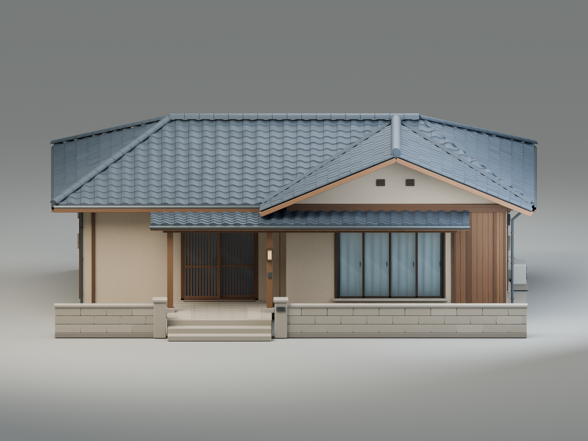
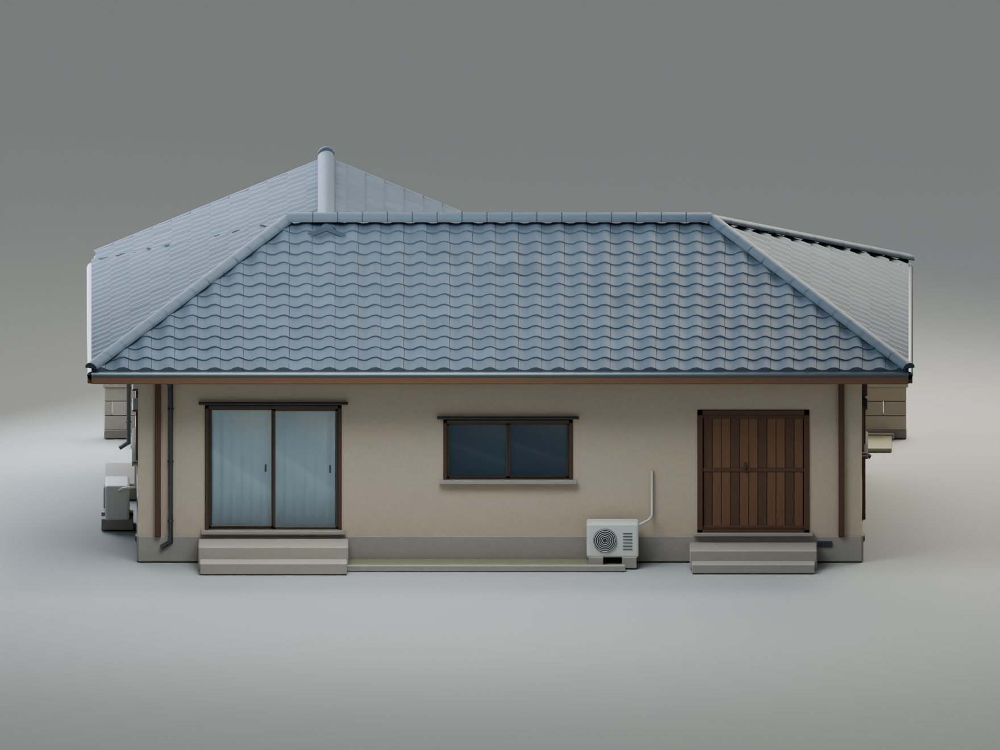
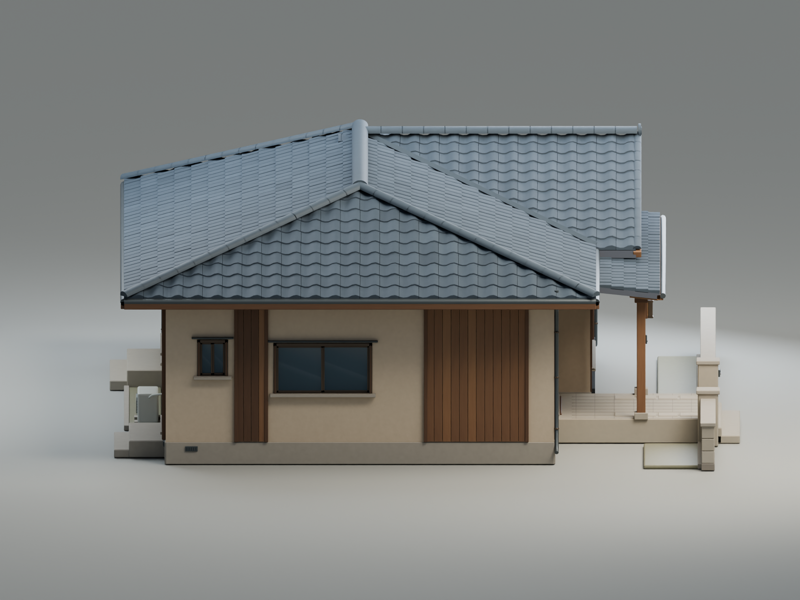
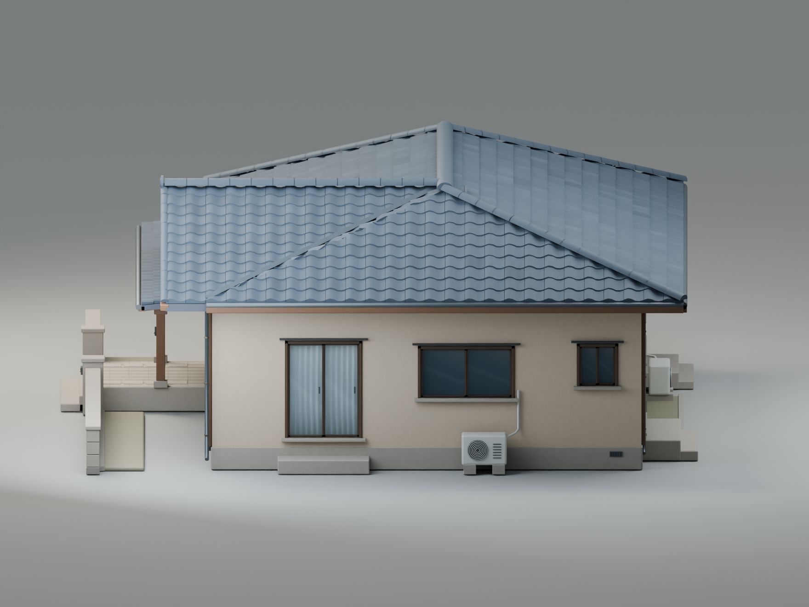
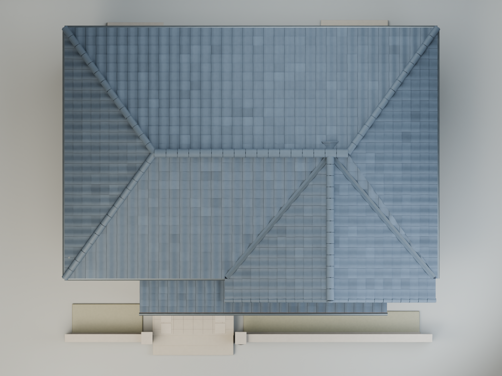
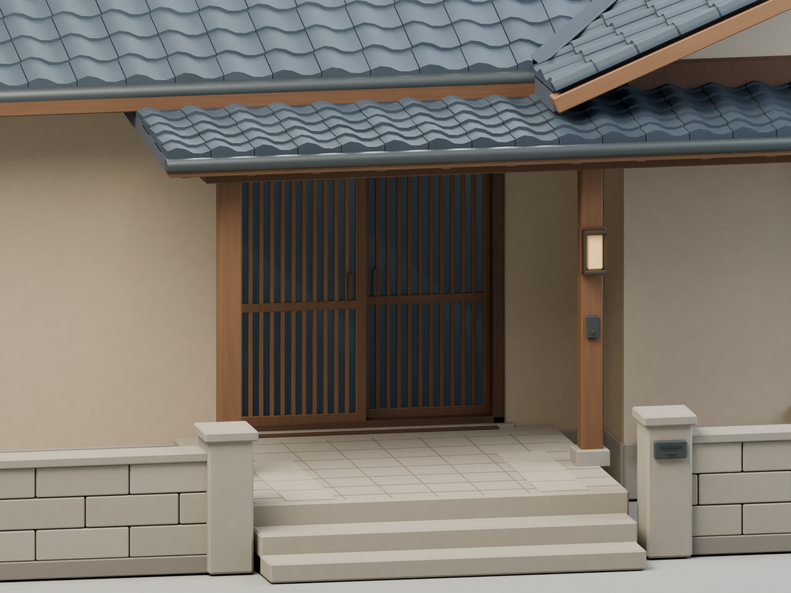
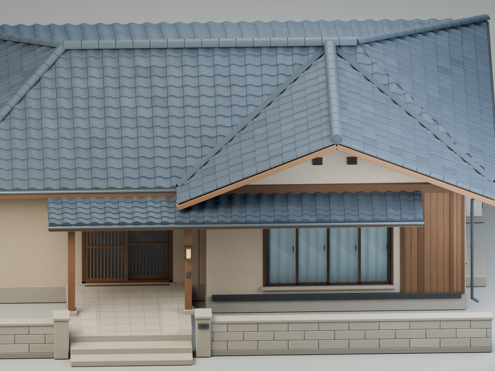

Amagi Mystery · Blender
Дом Амаги v02
Восемь ракурсов при одинаковом дневном освещении. Нажмите на изображение, чтобы открыть оригинал PNG размером 1760 × 1320.

Фасады и вид сверху










Вход и материалы



